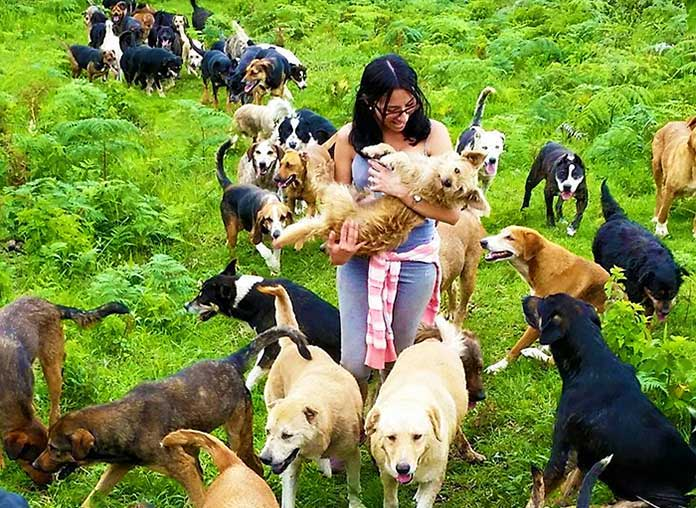

Quienes Somos?
Este refugio está compuesto por voluntarios que comparten el respeto por la vida de los animales y los consideran sus iguales siendo que estos tienen capacidad para sentir placer, alegría, dolor y sufrimiento.
Nuestra misión
Patitas es una organización sin fines de lucro liderada por un grupo de voluntarios que buscan superar la situación de sobrepoblación, abandono, crueldad e indiferencia que viven millones de animales en nuestro país.


Nuestros objetivos
- Luchar contra el abandono, el maltrato y el sufrimiento animal.
- Educar sobre el respeto por la vida de los animales a través de charlas y talleres educativos en lugares públicos y privados.
- Organizar campañas de castración gratuitas y/o a bajo costo en las zonas vulnerables.
- Asistir a animales en situación de riesgo de muerte, brindarles la atención médica necesaria para recuperarlos y encontrar familias para su adopción.